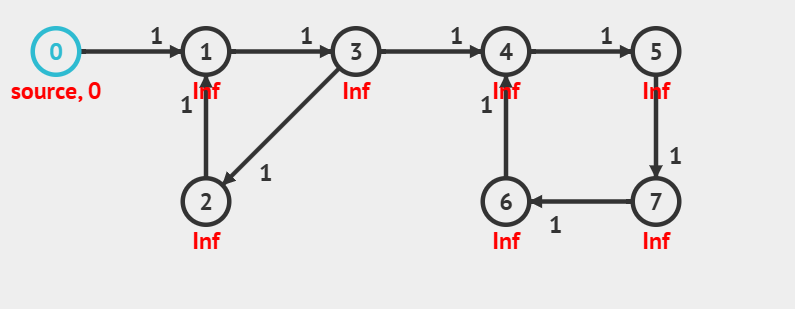

Dijkstra’s algorithm solves the single-source shortest path problem and is very similar to Prim’s algorithm. This algorithm assumes that all the weights are positive.
How Dijkstra’s Algorithm Works
Like Prim’s algorithm, Dijkstra’s algorithm works by initially setting the distance to every vertex as infinity, except for the source vertex, which is set to 0.
The algorithm requires:
An array of distances, all initialized to infinity except for the source vertex, which is initialized to 0.
A Boolean table to track visited vertices, with a size equal to |V| (number of vertices).
An array of previous vertices, all initialized to null to keep track of the shortest path.
The algorithm iterates |V| times, performing the following steps:
Find the unvisited vertex v with the minimum distance to it.
Mark v as visited.
Consider every adjacent unvisited vertex w:
Check if the distance to v plus the weight of edge (v, w) is less than the currently known shortest distance to w.
If so, update the shortest distance to w and set v as the previous vertex.
Continue until all vertices are visited or all remaining vertices have a distance of infinity.
The goal of Dijkstra's algorithm is to find the shortest paths from the source to all other vertices in a weighted graph without negative edges.
Example
To understand Dijkstra’s algorithm better, let’s take a graph and find the shortest path from the source vertex (0) to all other vertices.

Below is an illustration of Dijkstra's algorithm in action:
Output
The table below shows the distance from the source vertex (0) to each vertex:
Vertex
Distance from Source
0
0
1
1
2
3
3
2
4
3
5
4
6
6
7
5
Complexity Analysis of Dijkstra’s Algorithm
Time Complexity: O((V + E) log V), where V is the number of vertices and E is the number of edges.
Auxiliary Space: O(V + E).
Applications of Dijkstra’s Algorithm
Google Maps: Uses Dijkstra’s algorithm to find the shortest distance between source and destination.
Computer Networking: Forms the basis for routing protocols such as OSPF (Open Shortest Path First) and IS-IS (Intermediate System to Intermediate System).
Transportation and Traffic Management: Optimizes traffic flow, minimizes congestion, and finds the most efficient routes for vehicles.
Airlines: Plans flight paths that minimize fuel consumption and travel time.
Electronic Design Automation: Routes connections on integrated circuits and very-large-scale integration (VLSI) chips.